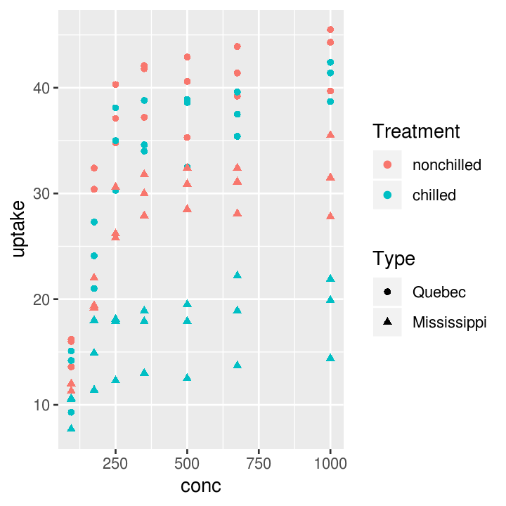
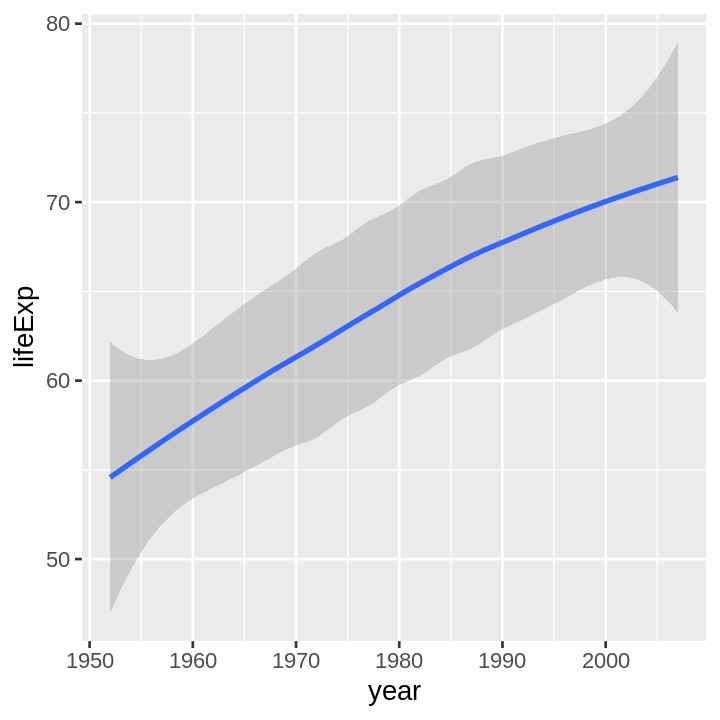

Creating your own functions in R
Session details
- Date of session: 01 Jun, 2018
- Instructor: Luke W. Johnston
- Session level: Intermediate
- Programming language: R
Session content
This is the code used during the session. I’ve added some comments and more explanation to the code.
All actions in R are functions
The + is a function, mean() is a function, [] is a function… everything that does something is called a function in R. So this to add 1 with 1:
… is a function that takes 1 and adds 1 to it. Functions have the basic structure of:
- the name of the new function
add_nums <- - the function to create the new function
function(), along with the argumentsnum1,num2 - the code to do the action of the function, everything between
{}- should have a
return()at the bottom that says what the function creates
- should have a
add_nums <- function(num1, num2) {
stopifnot(is.numeric(num1), is.numeric(num2))
added <- num1 + num2
return(added)
}You can use the new function by running the above code and writing out your new function, with arguments to give it.
add_nums(1, 2)
#> [1] 3
add_nums(c(1:10), 2)
#> [1] 3 4 5 6 7 8 9 10 11 12
# Two numbers should be the same length vector (same number of numbers) or one
# should be only one number.
add_nums(c(1:10), c(1, 4, 6))
#> Warning in num1 + num2: longer object length is not a multiple of shorter
#> object length
#> [1] 2 6 9 5 9 12 8 12 15 11
add_nums(c(1:10), c(11:20))
#> [1] 12 14 16 18 20 22 24 26 28 30There are a few things to consider. In R there are different “methods” of functions. This is way above what is necessary for this session, but if you are curious this website has a great explanation of the different methods (e.g. S3 methods). Be warned, the website is fairly advanced!
You can always look at the contents of all functions in R. So an example of an S3 function:
# Generic S3
print
#> function (x, ...)
#> UseMethod("print")
#> <bytecode: 0x55f5a839e1a8>
#> <environment: namespace:base>
# Printing for data.frames
print.data.frame
#> function (x, ..., digits = NULL, quote = FALSE, right = TRUE,
#> row.names = TRUE)
#> {
#> n <- length(row.names(x))
#> if (length(x) == 0L) {
#> cat(sprintf(ngettext(n, "data frame with 0 columns and %d row",
#> "data frame with 0 columns and %d rows"), n), "\n",
#> sep = "")
#> }
#> else if (n == 0L) {
#> print.default(names(x), quote = FALSE)
#> cat(gettext("<0 rows> (or 0-length row.names)\n"))
#> }
#> else {
#> m <- as.matrix(format.data.frame(x, digits = digits,
#> na.encode = FALSE))
#> if (!isTRUE(row.names))
#> dimnames(m)[[1L]] <- if (isFALSE(row.names))
#> rep.int("", n)
#> else row.names
#> print(m, ..., quote = quote, right = right)
#> }
#> invisible(x)
#> }
#> <bytecode: 0x55f5a6daf320>
#> <environment: namespace:base>Ok, let’s get to something a bit more interesting. Usually we create plots that are more or less the same each time, but with different variables or data. So this is a great example of using a function to simplify your code. Let’s load up the ggplot2 package for plotting and the gapminder dataset.
library(ggplot2)
library(gapminder)
head(gapminder)
#> # A tibble: 6 x 6
#> country continent year lifeExp pop gdpPercap
#> <fct> <fct> <int> <dbl> <int> <dbl>
#> 1 Afghanistan Asia 1952 28.8 8425333 779.
#> 2 Afghanistan Asia 1957 30.3 9240934 821.
#> 3 Afghanistan Asia 1962 32.0 10267083 853.
#> 4 Afghanistan Asia 1967 34.0 11537966 836.
#> 5 Afghanistan Asia 1972 36.1 13079460 740.
#> 6 Afghanistan Asia 1977 38.4 14880372 786.Let’s plot year by life expectancy:
ggplot(gapminder, aes(x = year, y = lifeExp)) +
geom_smooth()
#> `geom_smooth()` using method = 'gam' and formula 'y ~ s(x, bs = "cs")'What if we wanted to see another plot by pop over time:
ggplot(gapminder, aes(x = year, y = pop)) +
geom_smooth()
#> `geom_smooth()` using method = 'gam' and formula 'y ~ s(x, bs = "cs")'Or another plot… and so on. This starts getting a bit tedious, as you are just copying and pasting. There is a better way! Convert it into a function! The typical process for converting code into a function is first to write the code and make sure it works. Then wrap it in a function. And start replacing the variable names with the arguments. So:
# First this:
ggplot(gapminder, aes(x = year, y = pop)) +
geom_smooth()
# Then this:
plot_smooth <- function() {
plot <- ggplot(gapminder, aes(x = year, y = pop)) +
geom_smooth()
return(plot)
}
# Then lastly this:
plot_smooth <- function(data, xvar, yvar) {
plot <- ggplot(data, aes(x = xvar, y = yvar)) +
geom_smooth()
return(plot)
}But, this function won’t work! That’s because there is a tricky bit that you will quickly encounter in R… And that is called non-standard evaluation (NSE; check out here or here for more indepth look at what non-standard evaluation is). Because ggplot2 uses NSE, you will have to do things slightly differently. The aes in ggplot2 uses NSE. So you have to use aes_string instead.
plot_smooth <- function(data, xvar, yvar) {
plot <- ggplot(data, aes_string(x = xvar, y = yvar)) +
geom_smooth()
return(plot)
}
plot_smooth(gapminder, "year", "lifeExp")
#> `geom_smooth()` using method = 'gam' and formula 'y ~ s(x, bs = "cs")'
plot_smooth(gapminder, "year", "pop")
#> `geom_smooth()` using method = 'gam' and formula 'y ~ s(x, bs = "cs")'
If you want to make sure that who ever uses your function will not use a wrong argument, you can use “defensive programming” via the stopifnot() function. This forces the code to only work if xvar and yvar are character (e.g. "this") argument.
plot_smooth <- function(data, xvar, yvar) {
stopifnot(is.character(xvar), is.character(yvar))
plot <- ggplot(data, aes_string(x = xvar, y = yvar)) +
geom_smooth()
return(plot)
}This NSE evaluation also happens in a popular package called dplyr. If we wanted to do a common analysis or data wrangling like so:
library(dplyr)
#>
#> Attaching package: 'dplyr'
#> The following objects are masked from 'package:stats':
#>
#> filter, lag
#> The following objects are masked from 'package:base':
#>
#> intersect, setdiff, setequal, union
gapminder %>%
select(continent, year, pop) %>%
group_by(continent, year) %>%
summarise(mean(pop))
#> # A tibble: 60 x 3
#> # Groups: continent [?]
#> continent year `mean(pop)`
#> <fct> <int> <dbl>
#> 1 Africa 1952 4570010.
#> 2 Africa 1957 5093033.
#> 3 Africa 1962 5702247.
#> 4 Africa 1967 6447875.
#> 5 Africa 1972 7305376.
#> 6 Africa 1977 8328097.
#> 7 Africa 1982 9602857.
#> 8 Africa 1987 11054502.
#> 9 Africa 1992 12674645.
#> 10 Africa 1997 14304480.
#> # ... with 50 more rows… and do this again but change pop to another variable, we can create a function.
# First:
gapminder %>%
select(continent, year, pop) %>%
group_by(continent, year) %>%
summarise(mean(pop))
#> # A tibble: 60 x 3
#> # Groups: continent [?]
#> continent year `mean(pop)`
#> <fct> <int> <dbl>
#> 1 Africa 1952 4570010.
#> 2 Africa 1957 5093033.
#> 3 Africa 1962 5702247.
#> 4 Africa 1967 6447875.
#> 5 Africa 1972 7305376.
#> 6 Africa 1977 8328097.
#> 7 Africa 1982 9602857.
#> 8 Africa 1987 11054502.
#> 9 Africa 1992 12674645.
#> 10 Africa 1997 14304480.
#> # ... with 50 more rows
# Then:
mean_by_continent <- function() {
by_continent <- gapminder %>%
select(continent, year, pop) %>%
group_by(continent, year) %>%
summarise(mean(pop))
return(by_continent)
}
# Finally:
mean_by_continent <- function(data, variable) {
by_continent <- data %>%
select(continent, year, variable) %>%
group_by(continent, year) %>%
summarise(mean(variable))
return(by_continent)
}… then use dplyr’s standard evaluation functions, which are usually the function with a _at or _if or other variation of that at the end…
mean_by_continent <- function(data, variable) {
by_continent <- data %>%
select_at(c("continent", "year", variable)) %>%
group_by(continent, year) %>%
# This needs to change order a bit, since the mean will be applied to
# the variable.
summarise_at(variable, mean)
return(by_continent)
}And we can use it:
mean_by_continent(gapminder, "lifeExp")
#> # A tibble: 60 x 3
#> # Groups: continent [?]
#> continent year lifeExp
#> <fct> <int> <dbl>
#> 1 Africa 1952 39.1
#> 2 Africa 1957 41.3
#> 3 Africa 1962 43.3
#> 4 Africa 1967 45.3
#> 5 Africa 1972 47.5
#> 6 Africa 1977 49.6
#> 7 Africa 1982 51.6
#> 8 Africa 1987 53.3
#> 9 Africa 1992 53.6
#> 10 Africa 1997 53.6
#> # ... with 50 more rows
mean_by_continent(gapminder, "pop")
#> # A tibble: 60 x 3
#> # Groups: continent [?]
#> continent year pop
#> <fct> <int> <dbl>
#> 1 Africa 1952 4570010.
#> 2 Africa 1957 5093033.
#> 3 Africa 1962 5702247.
#> 4 Africa 1967 6447875.
#> 5 Africa 1972 7305376.
#> 6 Africa 1977 8328097.
#> 7 Africa 1982 9602857.
#> 8 Africa 1987 11054502.
#> 9 Africa 1992 12674645.
#> 10 Africa 1997 14304480.
#> # ... with 50 more rows
mean_by_continent(gapminder, c("pop", "lifeExp"))
#> # A tibble: 60 x 4
#> # Groups: continent [?]
#> continent year pop lifeExp
#> <fct> <int> <dbl> <dbl>
#> 1 Africa 1952 4570010. 39.1
#> 2 Africa 1957 5093033. 41.3
#> 3 Africa 1962 5702247. 43.3
#> 4 Africa 1967 6447875. 45.3
#> 5 Africa 1972 7305376. 47.5
#> 6 Africa 1977 8328097. 49.6
#> 7 Africa 1982 9602857. 51.6
#> 8 Africa 1987 11054502. 53.3
#> 9 Africa 1992 12674645. 53.6
#> 10 Africa 1997 14304480. 53.6
#> # ... with 50 more rowsSend the output to create a table!
| continent | year | lifeExp |
|---|---|---|
| Africa | 1952 | 39.13550 |
| Africa | 1957 | 41.26635 |
| Africa | 1962 | 43.31944 |
| Africa | 1967 | 45.33454 |
| Africa | 1972 | 47.45094 |
| Africa | 1977 | 49.58042 |
We can even use both our functions together!
mean_by_continent(gapminder, "lifeExp") %>%
plot_smooth("year", "lifeExp")
#> `geom_smooth()` using method = 'loess' and formula 'y ~ x'
Resources
- STAT545 from University of British Columbia, Canada
- Great introduction to functions from Software Carpentry
- Very advanced (for those interested) details about functions from Advanced R book
This work is licensed under a Creative Commons Attribution 4.0 International License. See the licensing page for more details about copyright information.